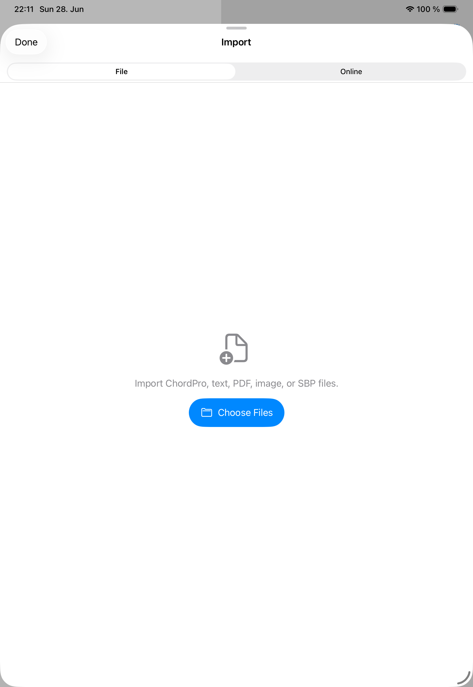

Scans
PDFs
Use PDFs for lead sheets, scanned charts, and documents that should stay visually fixed.

Prepare a PDF
- Import the PDF into the selected library.
- Review the preview before saving.
- Rotate pages that were scanned sideways.
- Crop or correct perspective when a page was photographed.
- Apply contrast, grayscale, or optimization presets when readability improves.
Use PDFs on stage
PDF songs open in the viewer with annotation-aware navigation and performance controls. Use zoom carefully before a show so page turns and annotation positions feel predictable.
When to choose ChordPro instead
Choose ChordPro when you need editable lyrics, transposition, notation changes, or flexible text layout. Choose PDF when the original page layout is the source of truth.